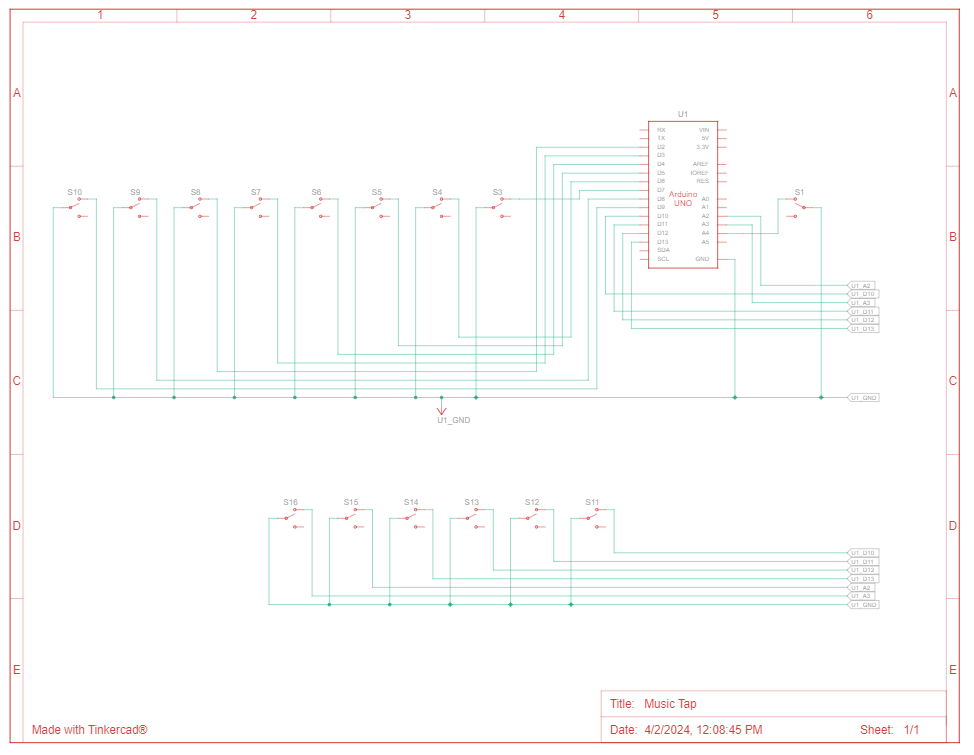

Concept
Music Tap is an expressive musical interface that utilizes the human body. It is a wearable piece of technology that allows any performer to create music on the go. This musical interface considers the overall experience of the performer, thus it can be used while sitting, standing or even lying down! The physical interface consists of a shirt and skirt that can be worn by a human user.
Functionality
Music Tap is an iteration of Music Slap. It consists of all the functionality presented in Music Slap and additional features. These additional features are discussed below.
Multiple jewel buttons, each encoded to a musical note in the C4 octave (as default), are attached to an outfit consisting of a full-sleeve shirt and a skirt that can be worn by a human user. Tapping on a jewel button will produce a sound (from the computer using the serial port) of the corresponding musical note. As well, both sharps and flats are present in our musical interface! Music Tap can also switch between different octaves by toggling the two dark pink jewel buttons located on the lower back on the right side of the user:
- If the lower jewel button is pressed, then all the musical notes in the interface decrease to an octave lower than the current octave setting
- If the upper jewel button is pressed, then all the musical notes in the interface increase to an octave higher than the current octave setting
The user input is taken via the Arduino code whereas the musical note sounds are produced from the computer attached via a python code file. The Arduino code sends messages to the connected port on the computer when it detects a user input and the python code file listens to messages sent to the port connected to the Arduino using the Serial module. Executing the python file after starting to run the Arduino code allows the two programs to communicate. This communication enables to produce the output sound of a musical note when a jewel button is touched. This sound is generated through the pygame.mixer module and emitted via the computer.
The following discusses additions and improvements made to the Music Slap interface in order to create Music Tap.
- The cardboard puppet used to simulate a human being has been replaced by a human-like doll in order to accurately represent the interaction of the envisioned interface with a human user
- Each musical note has been allocated to a body part such as shoulders, thighs, hips, stomach, hand and knee for remembering the locations of musical notes easily
- The aluminium switches have been covered up with a shirt and skirt for a more aesthetic and finished look
- Each jewel button on the shirt and skirt is placed at the location of the aluminium foil switches underneath, hence indicating to the user where to press in order to produce the sound of the musical note
- The musical notes (jewel buttons) are placed in a manner on the interface to allow for a diverse set of choreographies with multiple different songs
- The pushbuttons that shifted the octaves have been replaced by two aluminium switches in order to include this feature on the user's body as well. These two switches are also indicated by jewel buttons on the shirt and are placed on the right lower back of the user in order to only allow the right hand to interact with these buttons
- The interface has been improved to consist of a complete musical scale
- The software has been improved to allow the user to play chords. By pressing on multiple shirt buttons at the same time, the musical notes corresponding to the pressed buttons are played in unison
Final Artifact
The images below showcase the final artifact:
The natural music notes are represented with light pink jewel buttons on the shirt and skirt, whereas the sharp and flat music notes are presented by the dark pink jewel buttons on the shirt. The dark pink jewel buttons on the right lower back indicate the octave controls.
Note: Due to the limited amount of wiring available, a human-sized interface was not feasible to produce. Hence, a puppet was used to represent the human user in this image and in the demo videos showcased later. This puppet allows to get a feel of the interaction.
Below images showcase Music Slap's final artifact compared to Music Tap's.

Music Slap Music Tap
Comparing Music Slap and Music Tap:
| Music Slap | Music Tap |
|---|---|
| Cardboard box puppet simulating human user | Human-like doll used as a puppet to simulate human user |
| Simulated clothes via paper | Consists of real clothes made out of fabric |
| Wiring and switches can be seen | Wires and switches hidden under clothes and switches represented by jewel buttons |
| Pushbuttons used for octave controls | Octave controls brought onto user's body using switches and jewel buttons for indication on shirt |
| Not capable of chords | Enables playing of chords |
| All musical notes on front upper body | Each musical note mapped to a human body part |
| No embodiment of choreography | Musical notes placed in a manner to enable different choreographies for various songs |
| Contained incomplete music scale | Consists of a complete music scale |
Concept Development
The following image displays the concept development that took place for this project.

Demo Video
The following video demonstrates the functionality of Music Tap.
Recital
The below video showcases a choreography while playing a song (Row Row Row Your Boat) using Music Tap.
Code
Click here for the code used in this project.
Circuit Schematic Diagram
References
- Obtained sound files from plemaster01. (n.d.). Pythonpiano/assets/notes at main · Plemaster01/Pythonpiano. GitHub. Retrieved February 7, 2024 from https://github.com/plemaster01/PythonPiano/tree/main/assets/notes
- Learned how to work with the sound files from plemaster01. (n.d.-b). Pythonpiano/main.py at main · Plemaster01/Pythonpiano. GitHub. Retrieved February 7, 2024 from https://github.com/plemaster01/PythonPiano/blob/main/main.py
- Learned how to read data from serial port from TinkerAssist. (2021, January 12). Python tutorial - how to read data from Arduino via serial port. YouTube. Retrieved February 8, 2024 from https://www.youtube.com/watch?v=AHr94RtMj1A&t=6s
- Learned how to integrate python and Arduino code together from Musicant, D. (n.d.). Getting your Arduino to play music on your laptop, using Python. Getting your arduino to play music on your laptop, using python. Retrieved February 8, 2024 from https://www.cs.carleton.edu/faculty/dmusicant/cs232w20/pages/page470460.html
- Learned how to read pin values and print in serial monitor from Team, P. by D. E. (2022, January 14). The basics of Arduino: Reading switch states. Device Plus. Retrieved February 8, 2024 from https://www.deviceplus.com/arduino/the-basics-of-arduino-reading-switch-states/#:~:text=The%20pin%20states%20can%20be,conditional%20branching%20after%20checking%20them.
- Learned how to make switches using aluminium foil from Exercise 1: Your own switch. Mehackit. (2020, April 15). Retrieved February 1, 2024 from https://mehackit.org/en/courses/electronics_and_programming_basics/02-switch-stuff-on-and-off/03-exercise-1/